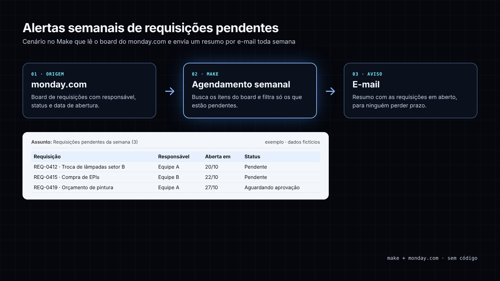
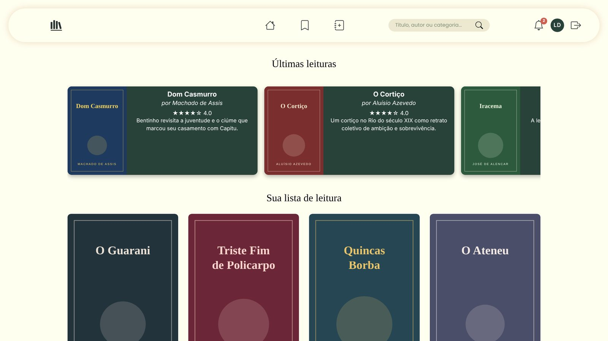
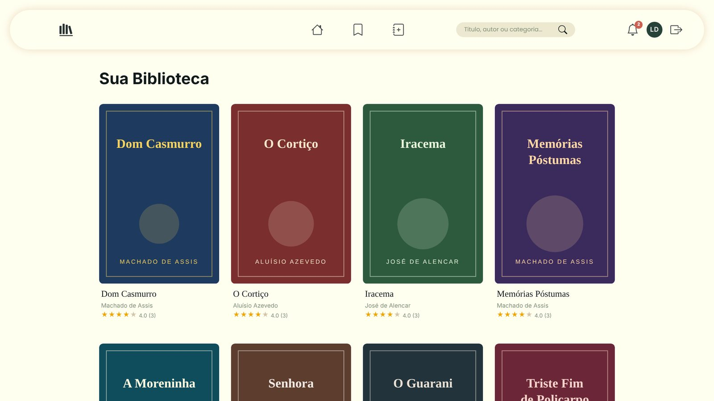
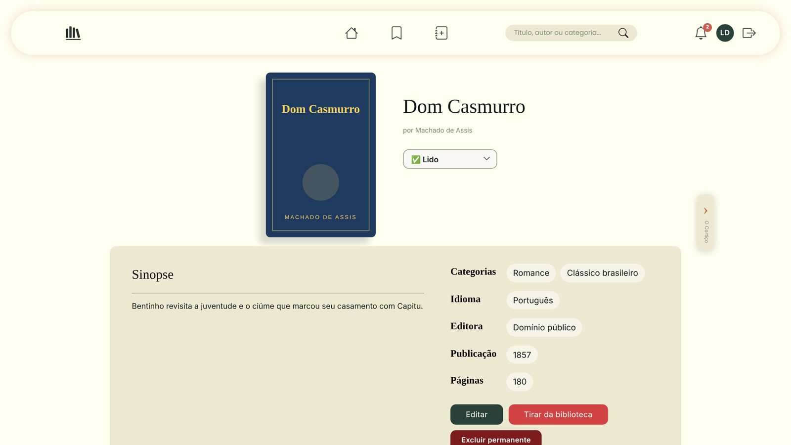
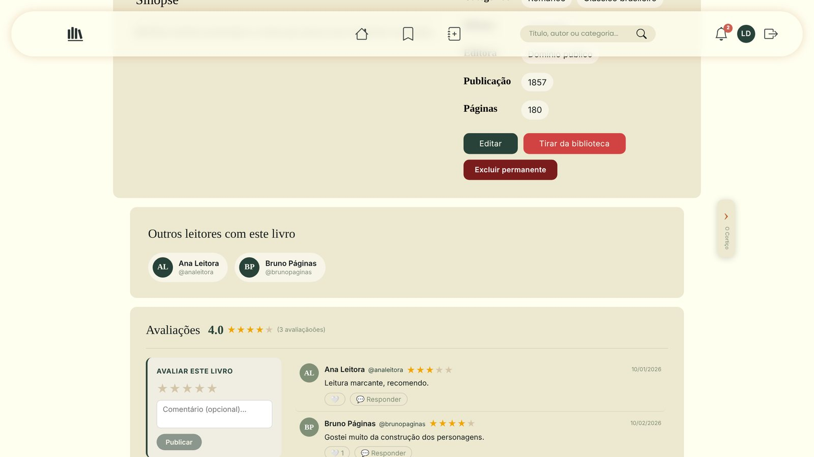
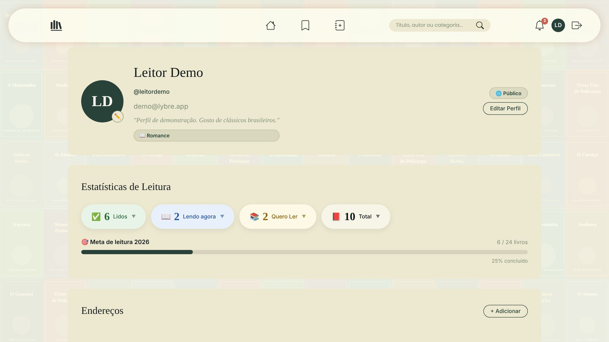
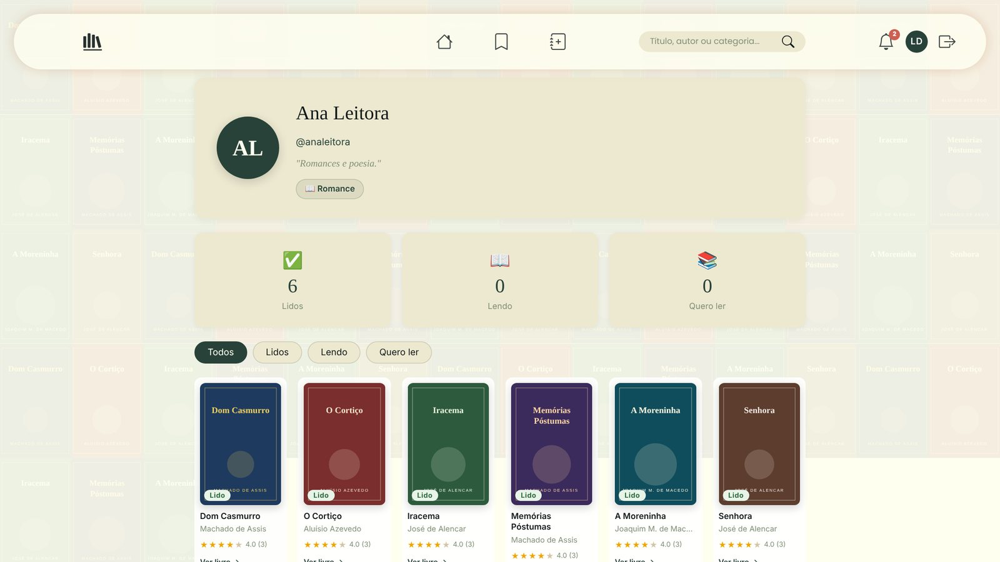

Eu uso IA para transformar problemas reais em soluções funcionando.
Sou o Miguel, estudante de Análise e Desenvolvimento de Sistemas (Senac) e Assistente Administrativo no
Nubank Parque. Lá, encontro processos manuais e construo do zero sistemas, automações e dashboards,
usando agentes de IA, prompt engineering e vibe coding.
negócioAutomação e IA aplicada
Ferramentas internas, dashboards e automações com ganho medido em horas.
técnicaEngenharia de software e dados
Back-end, testes automatizados, CI/CD, algoritmos e modelagem de dados.
DestaqueEm uso por ~20 pessoas1ª versão em 2 a 4 dias
Central de Engenharia
Sistema web interno que substitui planilhas, macros e controles manuais da área de Engenharia de uma arena de eventos. Prints com dados fictícios.
Problema
Custos de eventos, medições de notas fiscais, budget e vencimento de documentos ficavam espalhados em planilhas e macros VBA que só eu sabia operar.
Solução
Um web app com 5 módulos: relatório de eventos (painéis de custos, avarias, manutenção e comparação entre dias), notas fiscais e contratos, budget, consumo de utilidades e vencimento de documentos. Inclui importação de planilhas, exportação em Excel e PDF, contas com perfis e histórico de alterações.
Como usei IA
Desenvolvido com o Claude Code como agente: escrevi especificações em linguagem natural, revisei o código gerado, testei com dados reais e iterei módulo a módulo.
Resultado
O relatório pós-evento caiu de 1h30 para 30 minutos (de 4h a 10h economizadas por mês), a montagem da planilha passou a ser feita por um colega, e as medições de NF ficaram num só lugar, com consulta por período e controle de prazo. Usado por cerca de 20 pessoas de diferentes áreas.
App desktop em Python que preenche sozinho o portal de credenciamento de eventos. Prints com dados fictícios; a demo é uma simulação web da mesma interface.
Problema
Credenciar colaboradores internos e terceiros (média de 12 por evento) era preencher o mesmo formulário web, pessoa por pessoa: cerca de 30 minutos por evento, de 4 a 10 eventos por mês.
Solução
Interface em Tkinter para marcar quem vai ao evento; o Selenium abre o portal, escolhe o evento e envia os cadastros em sequência, com log em tempo real.
Resultado
Menos de 5 minutos por evento (85% menos tempo), rodando em segundo plano enquanto a pessoa faz outras tarefas. Inclui histórico com filtros, exportação em CSV e cadastro de colaboradores.
Power BI de custos de eventos e relatórios automatizados
Dashboard de custos, manutenção e consumo por evento, com visuais em Python e template de PowerPoint gerado por código. Prints com dados fictícios.
Problema
As apresentações pós-evento eram montadas à mão e os visuais padrão do Power BI não seguiam a marca.
Solução
Modelo estrela com tabelas fato de itens, consumos e chamados ligadas por ID a eventos, medidores e calendário; medidas DAX como CALCULATE, SUMX, TOTALYTD, DATEADD e RANKX; gráficos em matplotlib e um template de 10 slides gerado com Node.js.
Resultado
Base usada para acompanhar custos, SLA de manutenção e consumo de utilidades, e para apoiar o orçamento do ano seguinte.
Power BI
DAX
Power Query
Python
Node.js
pptxgenjs

Em usoSem código
Alertas semanais de requisições pendentes
Automação no Make integrada ao monday.com que avisa por e-mail o que ainda está em aberto.
Problema
Requisições pendentes ficavam paradas no board sem ninguém perceber, e acompanhar dependia de abrir o monday.com.
Solução
Um cenário no Make roda toda semana, lê o board de requisições, filtra as pendentes e envia um resumo por e-mail.
Resultado
O acompanhamento chega sozinho na caixa de entrada toda semana, sem conferência manual.
Make
monday.com
E-mail
Agendamento
Em desenvolvimento
App de finanças com Open Finance
App mobile pessoal que lê meus dados bancários via API e responde perguntas em linguagem natural.
Problema
Queria saber para onde vai meu dinheiro sem categorizar gastos manualmente.
Solução
Integração com a API de Open Finance da Pluggy e um chat com IA: "quanto gastei com Uber por mês?".
API Pluggy
Android
LLM
Claude Code






Projeto em grupoFeito em ~2 meses
Lybre · biblioteca pessoal com rede de leitores
Projeto da faculdade (Senac). Print com dados fictícios: biblioteca pessoal com avaliações, perfis, notificações e recomendações da comunidade.
Minha parte
Criei a base do projeto (Spring Boot + React) e as primeiras telas, e escrevi a suíte de testes automatizados: unitários parametrizados, integração com MongoDB real (Testcontainers), E2E e VCR de API externa.
Qualidade
Cobertura de testes acima de 88% (JaCoCo), quality gate aprovado no SonarCloud e CI no GitHub Actions a cada push.
Equipe
Desenvolvido com mais duas colegas, com pull requests e revisão de código.
Começo por um processo manual, repetitivo ou que depende de uma pessoa só, e meço quanto tempo ele custa.
02
Especifico em linguagem natural
Escrevo um prompt com contexto, regras de negócio, estrutura real dos dados e critérios de pronto.
03
Construo com um agente
Uso o Claude Code para gerar e editar o código em etapas pequenas, revisando cada mudança.
04
Testo com dados reais
Valido com as planilhas e os casos do dia a dia, e não com dados de exemplo, até o resultado bater.
05
Entrego e meço
Coloco nas mãos de quem usa, coleto feedback e acompanho o ganho de tempo e a redução de erros.
Prompts que viraram produto
Em cada aba, o pedido que fiz no começo e a versão estruturada que uso hoje para especificar um projeto: contexto, objetivo, regras de negócio, restrições e critério de pronto. Sem dados da empresa.
claude code · central-de-engenharia/spec.md
Pedido original (resumido): Tenho um Power BI e uma planilha que o alimenta. Dá para ter isso na rede, num programa em Python/HTML/CSS, para compartilhar com outros setores?
# CONTEXTO
Trabalho na Engenharia de uma arena de eventos (shows, jogos e projetos especiais).
Os custos de cada evento (mão de obra, avarias, insumos e medidores de consumo)
ficam numa planilha Excel que alimenta um Power BI. Só eu sei operar.
# OBJETIVO
Um web app interno que seja a fonte única desses dados e reproduza os painéis
do Power BI no navegador, para que outros setores consultem sem depender de mim.
# REQUISITOS
1. Cadastro de eventos: data, categoria, gênero e público.
2. Importação das planilhas de custo (.xlsx), validando colunas obrigatórias.
3. Painéis de custo por evento, por tipo e comparação entre eventos.
4. Exportação em Excel e PDF.
5. Login com perfis (admin, editor, visitante) e histórico de alterações.
# RESTRIÇÕES
- Python + Flask + SQLite, rodando no notebook da empresa sem instalar servidor.
- Interface em português, com a identidade visual da empresa.
- Nenhum dado real em exemplos ou testes.
# FORMA DE TRABALHO
Entregue em etapas: primeiro o modelo de dados para eu revisar, depois um módulo
por vez. Antes de cada módulo, liste as suposições que está fazendo.
# CRITÉRIOS DE PRONTO
- Os totais do app batem com os do Power BI para os mesmos eventos.
- Um colega sem treinamento cadastra um evento em menos de 5 minutos.
Resultado → A Central de Engenharia: 5 módulos, ~20 usuários, relatório pós-evento de 1h30 para 30 minutos.
claude code · modulo-notas-fiscais.md
Pedido original (resumido): Na aba Contratos, além do saldo contratado, quero o saldo atual descontando as medições, com alerta de saldo acabando e de contrato vencendo.
# CONTEXTO
Módulo de Notas Fiscais e Contratos da Central. Cada contrato tem valor
contratado, aditivos e medições mensais enviadas pelo fornecedor.
# TAREFA
Mostrar o saldo atual ao lado do saldo contratado na aba Contratos.
# REGRA DE NEGÓCIO
saldo_atual = (valor_contratado + soma_aditivos) − soma_medicoes
# ALERTAS
- Saldo: quando saldo_atual ≤ X% do total do contrato.
- Vencimento: quando faltarem N dias ou menos para o fim do contrato.
X, N e os e-mails de envio ficam numa nova aba Configurações.
# AÇÕES
- Editar uma medição já lançada, registrando a alteração no histórico.
- Botão “Reenviar e-mail” em cada medição.
# CASOS DE TESTE
1. R$ 100.000 + aditivo de R$ 20.000 − medições de R$ 90.000 → saldo R$ 30.000.
2. Contrato sem medições → saldo igual ao contratado.
3. Medição editada → saldo recalculado e alteração no histórico.
# SAÍDA
Mostre o diff dos arquivos alterados e como testar cada caso.
Resultado → Saldo por contrato, alertas configuráveis e reenvio de e-mail: medições de NF centralizadas e com prazo controlado.
claude · quiz-ao-vivo.md
Pedido original (resumido): Quero um site tipo Kahoot para uma apresentação. Pelo menos 100 pessoas, entrando por QR code, escolhendo entre 4 respostas.
# OBJETIVO
Site de quiz ao vivo, estilo Kahoot, para uma apresentação na faculdade.
# ESCALA
Até 100 participantes ao mesmo tempo, pelo celular ou computador.
# FLUXO
1. O apresentador abre a sala e projeta um QR code.
2. O participante escaneia e escolhe nome e avatar.
3. Cada pergunta tem 4 alternativas e tempo limite;
pontua mais quem acerta mais rápido.
4. No fim: pódio e planilha com o resultado de cada pessoa.
# RESTRIÇÕES
- Custo zero: sem servidor pago, hospedagem estática (GitHub Pages).
- Funcionar na rede da faculdade e no 4G.
- HTML, CSS e JavaScript puros; perguntas fáceis de editar.
# ANTES DE CODAR
Compare duas opções de comunicação em tempo real que atendam às restrições
e recomende uma, com prós e contras.
Resultado → Quiz sem servidor (WebRTC), com QR code, pontuação por velocidade e pódio, pronto em ~2 dias.
claude · credenciamento-automatico.md
Ponto de partida: credenciar à mão, pessoa por pessoa, a equipe de cada evento no portal.
# CONTEXTO
A cada evento credencio cerca de 12 pessoas num portal web, preenchendo o mesmo
formulário uma a uma: ~30 minutos por evento, de 4 a 10 eventos por mês.
# OBJETIVO
App desktop em Python que faça esse preenchimento sozinho.
# REQUISITOS
1. Cadastro local de colaboradores, com busca.
2. Tela para marcar quem vai a cada evento.
3. Selenium abre o portal, escolhe o evento e envia os cadastros em sequência.
4. Log em tempo real, histórico com filtros e exportação em CSV.
# ROBUSTEZ
- Esperas explícitas, nunca sleep fixo.
- Se um cadastro falhar, registrar o erro e seguir para o próximo.
- Nenhuma senha salva em texto puro.
# CRITÉRIO DE PRONTO
12 pessoas credenciadas em menos de 5 minutos, rodando em segundo plano.
Resultado → De 30 para menos de 5 minutos por evento (85% menos tempo).
03 / habilidades
Ferramentas que uso
Algoritmos e grafos
Estudo na faculdade: BFS/DFS, Dijkstra, PageRank e centralidade (proximidade e intermediação) aplicados a análise de redes.
Testes e qualidade
Testes unitários parametrizados, de integração com banco real (Testcontainers) e E2E; cobertura acima de 88% e SonarCloud no Lybre.
Dados e modelagem
Modelagem de banco (SQLite, MongoDB), modelo estrela no Power BI, DAX e visuais em Python.
Arquitetura web
APIs REST (Flask, Spring Boot), autenticação JWT, perfis de acesso e comunicação em tempo real (WebRTC).
IA generativa
Prompt engineering
Vibe coding
Claude Code (agente)
Claude
Desenvolvimento
Python
HTML
CSS
JavaScript
Node.js
Java
Spring Boot
React
Flask
SQLite
APIs REST
Testes automatizados
VS Code
Dados e automação
Power BI
Excel avançado
Macros/VBA
Make
monday.com
Dashboards e KPIs
Produto e negócio
Figma
SAP (MDG, Concur)
ServiceNow
Análise de custos
Budget
04 / contato
Vamos construir algo?
Estou aberto a oportunidades em IA generativa, automação e dados.